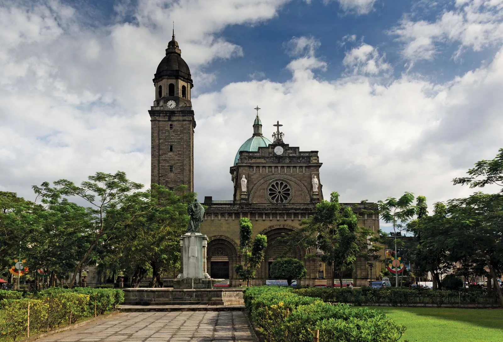

Your city escape starts here
Welcome to NCR
The National Capital Region, also known as Metro Manila, is the center of business, culture, history, and entertainment in the Philippines. It offers many exciting places to visit, delicious food to try, and activities for travelers.
Popular Tourist Spots

Intramuros
Walk through Manila's storied walled city.

Rizal Park
Pause for a peaceful stroll in a landmark park.

Manila Bay
Take in the waterfront and a famous sunset.

National Museum
Discover art, heritage, and Filipino history.